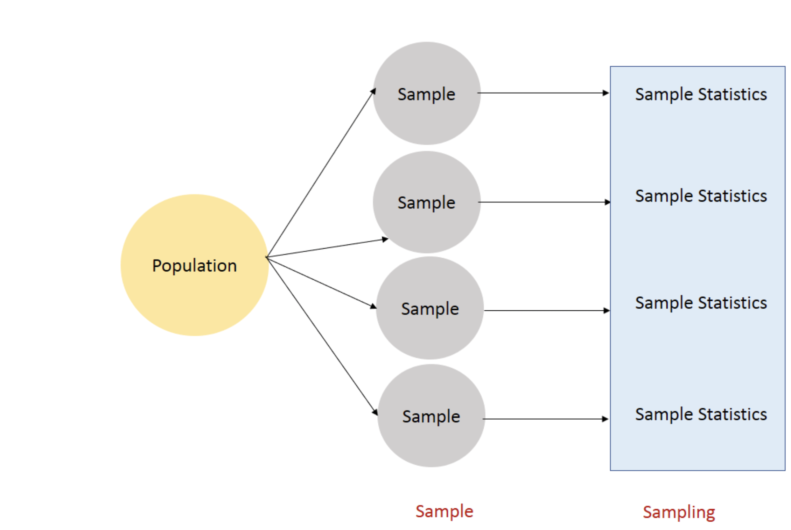

import numpy as np
import pandas as pd
import matplotlib.pyplot as plt
import seaborn as sns
from matplotlib import rcParams
# figure size in inches
rcParams['figure.figsize'] = 11.7,8.27Foundations to inference Statistics
CLT
sampling
z-distribution
t-distribution
CI
Confidence Interval
Bootstrapping
Basics of inference statistics, sampling distributions, Bootstrapping, Confidence Intervals
Sampling Distribution

Steps for the sampling distribution
- Get
nrandom samples each of sizem - Calculate the sample statistic for each random sample.
- plot the sample statistics distribution
np.random.seed(10)
random_population = np.random.beta(4, 5, size=1000)
random_sample_population = np.random.choice(random_population, 400, False) #
sns.distplot(random_sample_population, hist=True, kde=True, color='red', norm_hist=True, label="Population Dist")
plt.title('Population')
plt.legend()
print('random population Mean -->', np.mean(random_sample_population))
print('random population SD -->', np.std(random_sample_population))random population Mean --> 0.4597295869346082
random population SD --> 0.16002188241803594Code to get sampling distribution
no_of_samples = 5000
sample_size = 50
def get_sampling_dist(population, no_of_samples, sample_size, stat):
'''
population - random sample population we have
- array or list
no_of_samples - number of samples (n)
sample_size - size of each sample.(m)
stat - sample stat to calculate.
- Function
'''
sampling_dist = []
for i in range(no_of_samples): ## n samples
sample = np.random.choice(population, sample_size, False) # each of size m
stat_val = stat(sample) #calculating stat
sampling_dist.append(stat_val)
return sampling_dist
sampling_dist_mean = get_sampling_dist(random_sample_population, no_of_samples, sample_size, np.mean)##ploting the sampling distribution.
sns.distplot(sampling_dist_mean, hist=True, kde=True, color='red', norm_hist=True, label="Sampling dist of mean")
plt.title('Sampling Dist of Mean')
plt.xlabel('sample means')
plt.legend()
print('Sampling Dist Mean -->', np.mean(sampling_dist_mean))
print('Sampling Dist SD -->', np.std(sampling_dist_mean))Sampling Dist Mean --> 0.46022309784271165
Sampling Dist SD --> 0.020887127365585376- We can do the above sampling distribution for any statistic value.
- If we observe the above means, sampling dist mean(x_bar) is nearly equal to the population mean(mu)
- We will call std of sampling dist as
standard error
Central Limit Theorem:
The distribution of sample means is nearly normal with mean = poluation mean, std = population_std/sqrt(sample_size).
\[\begin{align} \text{Sampling Dist ~} N( \mu, \frac{\sigma}{\sqrt{\text{sample size}}}) \\ \end{align}\]
Conditions
- Sampled observations must be independent.
- If we do sampling with replacement, the sample size must be less than 10% of the population.
- The sample size of 30 is sufficient for most distributions. However, strongly skewed distributions can require larger sample sizes.
Tip: We can simulate the CLT with https://gallery.shinyapps.io/CLT_mean/
print(0.020887127365585376*np.sqrt(sample_size))
print(np.std(random_population))0.14769429399712528
0.15723732430046308Warning: Can the Central Limit theorem apply to any other sample statistic like median, std? – No
Need for Confidence Interval
There will be variability in the point estimate because we can’t get the exact population data in real-time. so if we tell a range of mean(any stat), it will be useful. This is called a Confidence Interval. Before going into CI, we have to know Z and t distribution, confidence level.
Z- Distribution or standard normal distribution:
\[\begin{align} Z = \frac{ x - \mu}{\sigma} \\ \end{align}\]
Note: mean = 0, std = 1
standard_normal = np.random.standard_normal(size=100000)
sns.distplot(standard_normal, hist=True, kde=True, color='red', norm_hist=True)
plt.title('Z-Distribution')Text(0.5, 1.0, 'Z-Distribution')
Confidence level
The probability that the value of a parameter falls within a specified range of values. This will be very useful when we tell an interval. We can tell like, with 95% confidence, our statistic/parameter lies between lower bound and upper bound.
Let’s calculate confidence levels for the above z distribution.
For 95% confidence, (100-95)/2 = 2.5, we have to get the 2.5 percentile and (100-2.5)=97.5 percentile.
np.percentile(standard_normal, [2.5, 97.5])array([-1.94948191, 1.94622294])Our z scores lie between -1.95 and 1.95 with 95% confidence. based on above simulation( right value is 1.96, if we take more size, we will get 1.96) We can get this using (100-C)/2, 100-((100-c)/2) where C = 95 if we need 95% of confidence.
We can get these using the scipy.stats.norm.ppf function but in this function takes all the values with 0-1 only not 0-100 so 95% will become 0.95. We can get this using (1-C)/2, 1-((1-c)/2) where C = 0.95 if we need 95% of confidence.
from scipy.stats import norm
def get_qnorm(CL):
'''get the value in zdist for given CL
CL - Confidence level(0-1)'''
val = (1-CL)/2
return norm.ppf(val), norm.ppf(1-val)
get_qnorm(0.95)(-1.959963984540054, 1.959963984540054)##99 confidence level
get_qnorm(0.99)(-2.5758293035489004, 2.5758293035489004)##64 confidence level
get_qnorm(0.684)(-1.0027116650265495, 1.0027116650265495)Student’s t-distribution:
It is useful when population std is unknown. If the sample size is small, we may not get better results with the Z distribution. It is similar to the Z distribution bell-shaped curve but thicker tails than normal. Other than mean, std, it has another parameter called degree of freedom = n-1. It is wider so intervals that we get from t-dist are also wider.
from scipy.stats import t
def get_qnorm_t(CL, df):
'''get the value in t-dist for given CL
CL - Confidence level(0-1)'''
val = (1-CL)/2
return t.ppf(val, df), t.ppf(1-val, df)
get_qnorm_t(0.95, 29)(-2.045229642132703, 2.045229642132703)Difference between t-dist and z-dist
If we have more degrees of freedom(more samples), t-distribution will look like z-distribution. You can check that below.
for i in range(0, 1000, 50):
print('95% of CL with df '+str(i)+' is -->',get_qnorm_t(0.95, i))95% of CL with df 0 is --> (nan, nan)
95% of CL with df 50 is --> (-2.008559109715206, 2.008559109715206)
95% of CL with df 100 is --> (-1.9839715184496334, 1.9839715184496334)
95% of CL with df 150 is --> (-1.9759053308869137, 1.9759053308869137)
95% of CL with df 200 is --> (-1.9718962236316089, 1.9718962236316089)
95% of CL with df 250 is --> (-1.9694983934204002, 1.9694983934204002)
95% of CL with df 300 is --> (-1.9679030112607843, 1.9679030112607843)
95% of CL with df 350 is --> (-1.9667650028635124, 1.9667650028635124)
95% of CL with df 400 is --> (-1.965912343229391, 1.965912343229391)
95% of CL with df 450 is --> (-1.965249664736427, 1.965249664736427)
95% of CL with df 500 is --> (-1.9647198374673438, 1.9647198374673438)
95% of CL with df 550 is --> (-1.964286550912067, 1.964286550912067)
95% of CL with df 600 is --> (-1.9639256220427195, 1.9639256220427195)
95% of CL with df 650 is --> (-1.963620322372358, 1.963620322372358)
95% of CL with df 700 is --> (-1.963358711099814, 1.963358711099814)
95% of CL with df 750 is --> (-1.9631320366857694, 1.9631320366857694)
95% of CL with df 800 is --> (-1.9629337387277888, 1.9629337387277888)
95% of CL with df 850 is --> (-1.9627588026071148, 1.9627588026071148)
95% of CL with df 900 is --> (-1.9626033295371894, 1.9626033295371894)
95% of CL with df 950 is --> (-1.962464242556152, 1.962464242556152)get_qnorm(0.95)(-1.959963984540054, 1.959963984540054)get_qnorm_t(0.95, 50)for i in range(0, 1000, 50):
print('90% of CL with df '+str(i)+' is -->',get_qnorm_t(0.90, i))
print('-'*50)
print('90% of CL in Z-dist is -->', get_qnorm(0.90))90% of CL with df 0 is --> (nan, nan)
90% of CL with df 50 is --> (-1.6759050245283318, 1.6759050245283311)
90% of CL with df 100 is --> (-1.6602343260657506, 1.66023432606575)
90% of CL with df 150 is --> (-1.655075500184607, 1.6550755001846063)
90% of CL with df 200 is --> (-1.6525081009102696, 1.652508100910269)
90% of CL with df 250 is --> (-1.6509714898126593, 1.6509714898126586)
90% of CL with df 300 is --> (-1.6499486739375542, 1.6499486739375535)
90% of CL with df 350 is --> (-1.6492188695371959, 1.6492188695371952)
90% of CL with df 400 is --> (-1.6486719414653956, 1.648671941465395)
90% of CL with df 450 is --> (-1.6482468047587875, 1.6482468047587868)
90% of CL with df 500 is --> (-1.6479068539295052, 1.6479068539295045)
90% of CL with df 550 is --> (-1.6476288171096811, 1.6476288171096805)
90% of CL with df 600 is --> (-1.647397191759995, 1.6473971917599943)
90% of CL with df 650 is --> (-1.6472012521875499, 1.6472012521875492)
90% of CL with df 700 is --> (-1.6470333412605698, 1.647033341260569)
90% of CL with df 750 is --> (-1.6468878462849894, 1.6468878462849887)
90% of CL with df 800 is --> (-1.6467605593740848, 1.6467605593740842)
90% of CL with df 850 is --> (-1.6466482638172075, 1.6466482638172069)
90% of CL with df 900 is --> (-1.6465484584682117, 1.646548458468211)
90% of CL with df 950 is --> (-1.6464591692544057, 1.646459169254405)
--------------------------------------------------
90% of CL in Z-dist is --> (-1.6448536269514729, 1.6448536269514722)From above, we can observe that, if df is large value( i.e n is large), t-distribution will yield similar results as z distribution.
Confidence Interval for Population Mean:
Why we need CI:
There will be variability in the point estimate because we can’t get the exact population data in real-time. so if we tell a range of mean, it will be useful.
From the above CLT theorem, we know that sampling means follows a Normal distribution. we also know the properties of standard normal distribution like 68-95-99.7 rules( even we can compute for any value) i.e we can tell with 68% confidence that, mean is between mean-1*std_sampling_dist, mean+1*std_sampling_dist.
\[\begin{align} \text{CI of Mean =} \mu \pm z^{*} * SE\\ \text{CI of Mean =} \mu \pm t^{*} * SE\\ \end{align}\]
from scipy.stats import norm
def get_ci_mean(sampling_mean, SE, ci):
'''Get CI for mean using z-dist
sampling_mean - sample mean
SE - Standard error from CLT
CI - Confidence level'''
z_temp = (1-(ci/100))/2
z = abs(norm.ppf(z_temp))
lower_bound = sampling_mean - z * SE
upper_bound = sampling_mean + z * SE
return lower_bound, upper_boundn5_ci = get_ci_mean(np.mean(sampling_dist_mean), np.std(sampling_dist_mean), 95)
print('95% CI is', n5_ci)95% CI is (0.4192850804656633, 0.5011611152197599)from scipy.stats import t
def get_ci_mean_t(sampling_mean, SE, ci, df):
'''Get CI for mean using t-dist
sampling_mean - sample mean
SE - Standard error from CLT
CI - Confidence level
df - degrees of freedom, (n-1)'''
t_temp = (1-(ci/100))/2
t_val = abs(t.ppf(t_temp, df))
lower_bound = sampling_mean - t_val * SE
upper_bound = sampling_mean + t_val * SE
return lower_bound, upper_boundn5_ci_t = get_ci_mean_t(np.mean(sampling_dist_mean), np.std(sampling_dist_mean), 95, sample_size-1)
print('95% CI is using t', n5_ci_t)95% CI is using t (0.41824884396920947, 0.5021973517162138)len(sampling_dist_mean)5000Tip: t distribution CI is wider than the Z distribution. Many times we don’t know what is the std of the population so it is better to use t distribution than z. If the sample size is larger, we can go for Z distribution(no issues if we have a large sample to analysis).
How to predict CI parameters other than mean
We know about sampling mean distribution so we can CI of mean very easily but how can we predict for median or percentile or IQR?
There is another set of methods to do stats called Non-Parametric methods. We can use the non-parametric methods and get the CI for any value without knowing the underlying distribution.
Bootstrapping:
Bootstrap Sample is Sampling with replacement of data of same size as shown below
Why same size?
the variation of the statistic will depend on the size of the sample. If we want to approximate this variation we need to use resamples of the same size.
Using Python
We can use np.random.choice to get the bootstrap samples.
###code to generate a Bootstrap sample
temp_population = np.array([1, 2, 3, 4, 5, 6, 7, 8, 9, 10])
print('Random Bootstrap sample from temp_population -->',
np.random.choice(temp_population, size=len(temp_population),replace=True))
print('Random Bootstrap sample from temp_population -->',
np.random.choice(temp_population, size=len(temp_population),replace=True))
print('Random Bootstrap sample from temp_population -->',
np.random.choice(temp_population, size=len(temp_population),replace=True))Random Bootstrap sample from temp_population --> [ 3 10 1 8 5 8 8 3 6 5]
Random Bootstrap sample from temp_population --> [3 8 5 4 4 1 9 9 3 6]
Random Bootstrap sample from temp_population --> [10 10 4 7 2 10 9 2 7 3]CI using Bootstrapping:
There are many ways to calculate bootstrap samples.
- Percentile Method
- Basic bootstrap Method or Reverse Percentile Interval
- Studentized-t Bootstrap Method
- Bias Corrected and accelerated
Some notations:
\(\tilde{\theta}_{m}\) - statistic of Bootstrap sample m
\(\hat{\theta}\) - statistic of data we have.
\(\theta\) - statistic what we want to estimate.
Percentile Method:
steps:
- Get the m bootstrap samples.
- calculate the m statistics \(\tilde{\theta}_{1}, \tilde{\theta}_{1}, \tilde{\theta}_{3} ... \tilde{\theta}_{m}\)
- Get the percentile values based in the how much confidance we need. Eg. for 95% CL, get 2.5 percentile and 97.5 percentile.
Code
np.random.seed(10)
def get_percentile_bs_ci(data, m, stat, cl):
'''
percentile method to get BS-CI
data - data we have(sample)
m - number of bootstrap samples
stat - statistic to find - a function
cl - confidence level
'''
theta_stat = []
for i in range(m):
bs_sample = np.random.choice(data, m)
theta_stat.append(stat(bs_sample))
sns.distplot(theta_stat, hist=True, kde=True, color='red', norm_hist=True)
lower_bound = (1-cl)/2
upper_bound = 1-lower_bound
return np.percentile(theta_stat, [lower_bound*100, upper_bound*100])##using above function to get bootstrap CI
get_percentile_bs_ci(random_sample_population, 10000, np.mean, 0.95)array([0.45656996, 0.46282595])
We can ge the same thing from arch module
from arch.bootstrap import IIDBootstrap
bs = IIDBootstrap(random_sample_population)bs.conf_int(func=np.mean, reps=10000, method='percentile', size=0.95)array([[0.44397996],
[0.47526665]])Important:CI from the percentile method is very narrow. If the underlying distribution is skew, it won’t work properly. so go for basic method or studentized-t method.
Basic Bootstrap Method or Reverse Percentile Interval Method:
steps:
- calculate the statistic \(\hat{\theta}\) on data we have.
- Get the m bootstrap samples.
- calculate the m statistics \(\tilde{\theta}_{1}, \tilde{\theta}_{1}, \tilde{\theta}_{3} ... \tilde{\theta}_{m}\)
- Calculate the CI with above formula.
Note: It assumes distribution of \(\hat{\theta}-\tilde{\theta}\) and \(\theta-\hat{\theta}\) are simialr
Code
np.random.seed(10)
def get_basic_bs_ci(data, m, stat, cl):
'''
Reverse Percentile Interval Method
data- sample we have
m - number of bootstrap samples
stat - stat function to calculate
cl - confidence level
'''
hat_theta = stat(data)
theta_stat = []
for i in range(m):
bs_sample = np.random.choice(data, m)
theta_stat.append(stat(bs_sample))
#sns.distplot(theta_stat, hist=True, kde=True, color='red', norm_hist=True)
lower_bound = (1-cl)/2
upper_bound = 1-lower_bound
lower_bound1 = 2*hat_theta - np.percentile(theta_stat, upper_bound*100)
upper_bound1 = 2*hat_theta - np.percentile(theta_stat, lower_bound*100)
return lower_bound1, upper_bound1get_basic_bs_ci(random_sample_population, 1000, np.mean, 0.95)(0.44972018316026047, 0.47056730107433303)You can get the more optimized code from arch.bootstrap
from arch.bootstrap import IIDBootstrap
bs = IIDBootstrap(random_sample_population)bs.conf_int(func=np.mean, reps=10000, method='basic', size=0.95)array([[0.44406911],
[0.47499762]])Studentized-t Bootstrap Method:
If the distributions of \(\hat{\theta}-\tilde{\theta}\) and \(\theta-\hat{\theta}\) are not close, then the basic bootstrap confidence interval can be inaccurate. But even in this case, the distributions of \(\frac{\hat{\theta}-\tilde{\theta}}{SE(\tilde{\theta})}\) and \(\frac{\theta-\hat{\theta}}{SE({\hat{\theta}})}\) could be close. hence we could use studentized bootstrap CI.
steps:
- calculate the statistic \(\hat{\theta}\) on data we have.
- Get the m bootstrap samples.
- For each Bootstrap sample
- compute the \(\tilde{\theta}\)
- compute \(SE({\tilde{\theta}})\)
- compute \(q = \frac{\tilde{\theta}-\hat{\theta}}{SE(\tilde{\theta})}\)
- Estimate \(SE(\hat{\theta})\) (You can directly compute or use another Bootstrap approach.)
- Calculate CI using above formulation.
code
from arch.bootstrap import IIDBootstrap
bs = IIDBootstrap(random_sample_population)bs.conf_int(func=np.mean, reps=1000, method='studentized', size=0.95)array([[0.44364941],
[0.47571528]])Bias Corrected and accelerated bootstrap CI:
The main advantage to the BCa interval is that it corrects for bias and skewness in the distribution of bootstrap estimates. The BCa interval requires that you estimate two parameters. The bias-correction parameter, z0, is related to the proportion of bootstrap estimates that are less than the observed statistic. The acceleration parameter, a, is proportional to the skewness of the bootstrap distribution
To compute a BCa confidence interval, you estimate z0 and a and use them to adjust the endpoints of the percentile confidence interval (CI). If the bootstrap distribution is positively skewed, the CI is adjusted to the right. If the bootstrap distribution is negatively skewed, the CI is adjusted to the left.
If the statistic is biased upward (that is, if it tends to be too large), the BCa bias correction moves the endpoints to the left. If the bootstrap distribution is skewed to the right, the BCa incorporates a correction to move the endpoints even farther to the right.
You can read more about calculating z0 and a in https://projecteuclid.org/download/pdf_1/euclid.ss/1032280214
code
from arch.bootstrap import IIDBootstrap
bs = IIDBootstrap(random_sample_population)bs.conf_int(func=np.mean, reps=1000, method='bca', size=0.95)array([[0.44443402],
[0.47456652]])When to use what?
- If we have small sample size, basic methods like “basic”, “percentile” may give wider intervels so ‘BCa’ or ‘Studentized-t’ may be better. If you have skewness, go for ‘BCa’.
- If we have large data, all methods may give better intervals but if we have skewness, it is better to go for ‘BCa’.